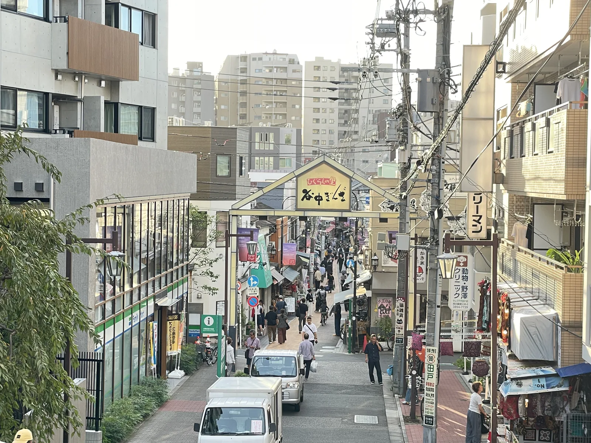
1
닛포리
관광지의 북적임에서 조금 벗어난 현지 거리와 도쿄 북동부로 이어지는 편리한 출발점입니다.
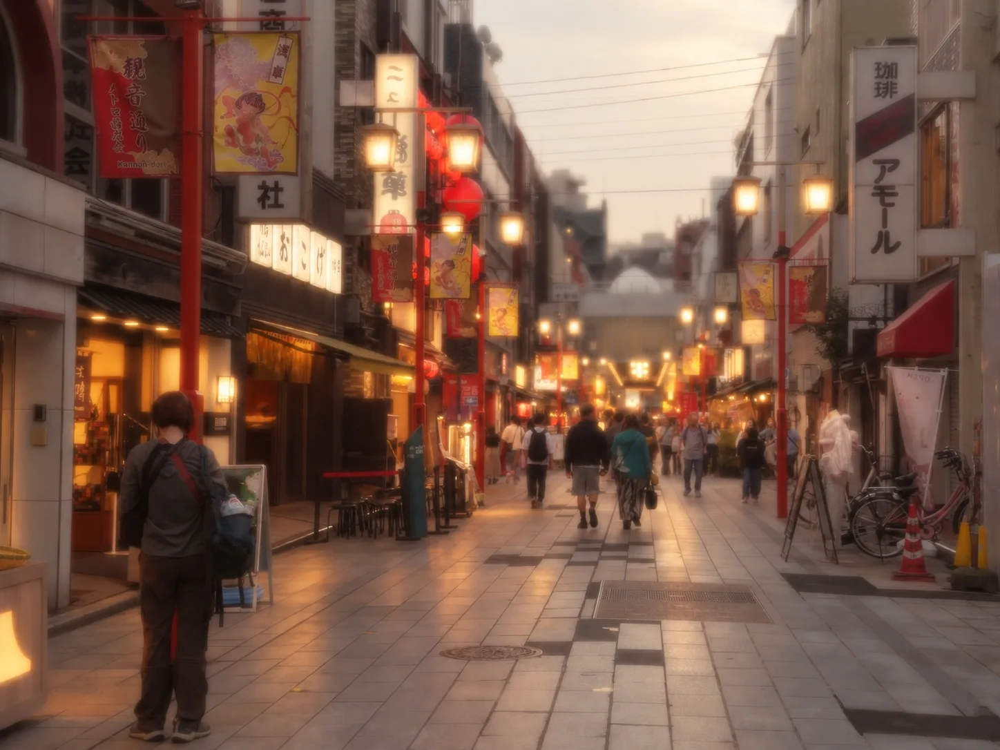
닛포리에서 아사쿠사와 도쿄 스카이트리 일대를 지나 긴시초까지, 거리의 눈높이로 도쿄 동부를 여행해 보세요.
도쿄 23구 내 일반 도에이 버스의 성인 균일 요금입니다. 최신 운행 정보는 공식 안내를 확인하세요.
TO-08을 따라 만날 수 있는 동네와 풍경을 골라 소개합니다. 이 노선은 도쿄 동부를 가로지르며 아사쿠사, 도쿄 스카이트리역 입구 일대와 긴시초를 지납니다.

관광지의 북적임에서 조금 벗어난 현지 거리와 도쿄 북동부로 이어지는 편리한 출발점입니다.
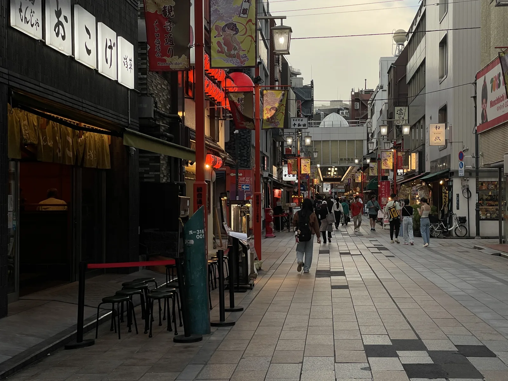
역사적인 거리와 사찰 마을의 분위기가 살아 있는 도쿄의 대표적인 시타마치입니다.
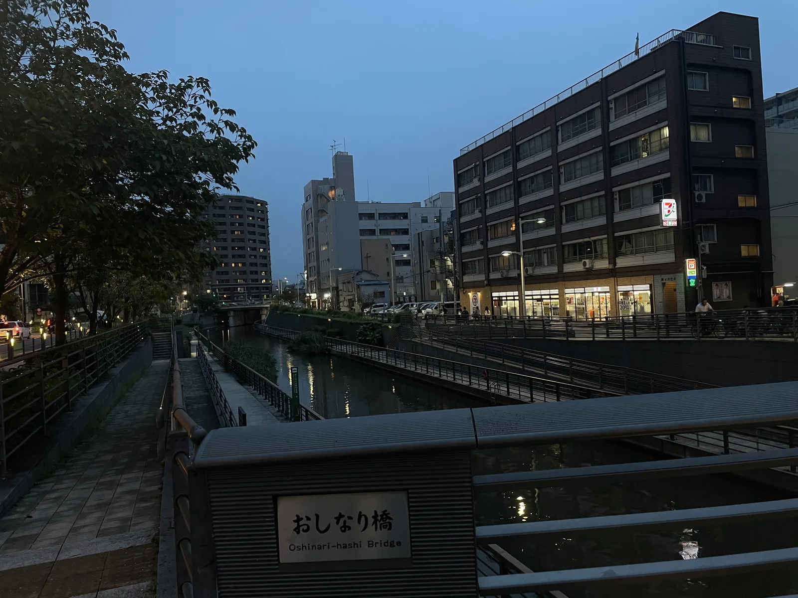
TO-08은 「도쿄 스카이트리역 입구」에 정차해 랜드마크까지 걸어서 쉽게 갈 수 있습니다.
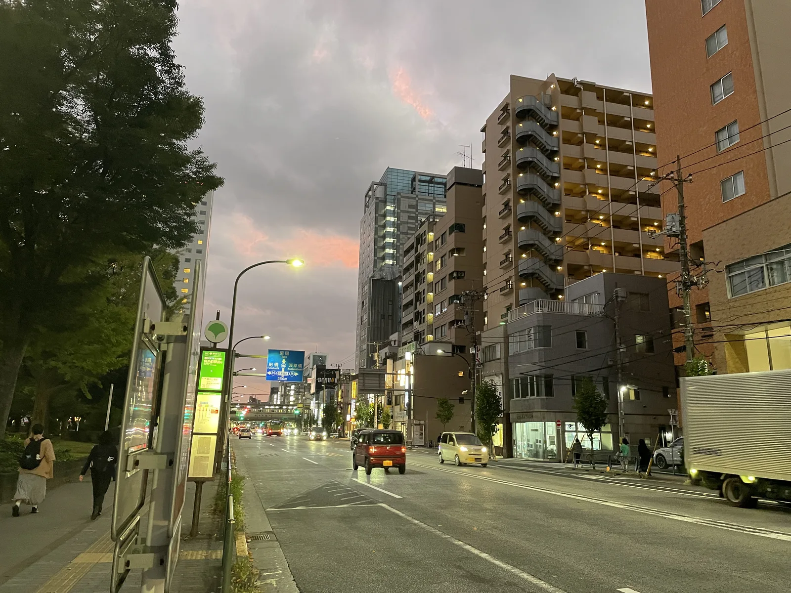
쇼핑 거리와 일상적인 도시 풍경, 스카이라인이 어우러지는 활기찬 도쿄 동부의 거점입니다.
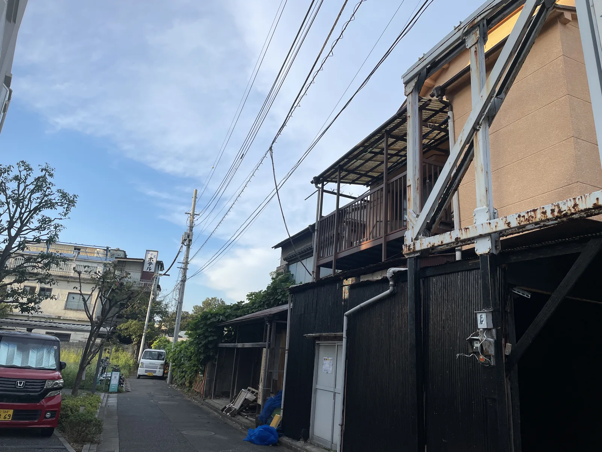
유명 관광지 사이에는 전철로 이동하면 놓치기 쉬운 평범한 동네와 일상의 도쿄 풍경이 이어집니다.
아래 기본 정보는 도쿄 23구 내 도에이 버스에 적용됩니다. 최신 정보는 공식 링크에서 확인하세요.
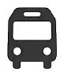
앞문으로 탑승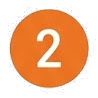
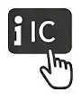
IC카드를 태그하거나 요금 결제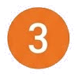
내릴 정류장 전에 하차 버튼 누르기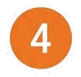
뒷문으로 하차하루 동안 도쿄 23구 내 도에이 버스를 무제한 이용할 수 있습니다(고토 01 제외).
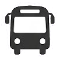
구매 방법은 변경될 수 있습니다. 최신 내용은 도쿄도 교통국에서 확인하세요.
시간표, 노선 변경 및 운행 정보는 반드시 공식 서비스를 통해 확인하세요.
Toei GO Tokyo는 독립적으로 개발된 여행 앱이며, 도쿄도 또는 도쿄도 교통국의 공식 앱이 아닙니다.